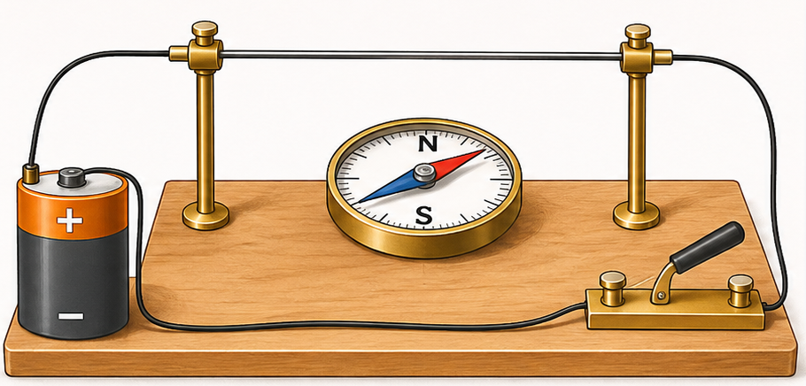
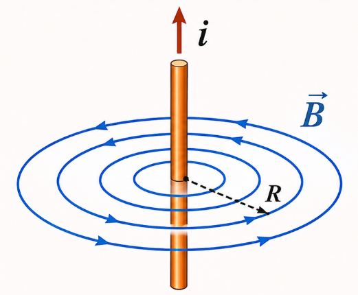
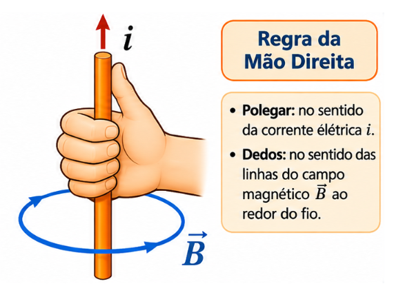

3º Ano | Aula 26: Campo Magnético de uma Corrente (Exp. de Oersted)
📚 Resumo:
A experiência de Oersted demonstrou que uma corrente elétrica produz um campo magnético ao redor do condutor. Esse campo pode ser identificado pelo desvio de uma agulha magnética colocada nas proximidades do fio.
1. Experiência de Oersted
Em 1820, Hans Christian Oersted observou que a passagem de corrente elétrica por um fio provocava o desvio de uma bússola próxima. Ao interromper a corrente, o desvio deixava de ocorrer.
2. Campo magnético de um fio retilíneo
As linhas de campo magnético formam circunferências concêntricas ao redor do fio. O sentido é determinado pela regra da mão direita.
3. Regra da mão direita
O polegar aponta no sentido convencional da corrente elétrica ($i$), enquanto os demais dedos, ao envolverem o fio, indicam o sentido do campo magnético ($\vec B$).
4. Intensidade do campo magnético
$$B=\frac{\mu_0 i}{2\pi r}$$
Para um fio retilíneo longo, o campo aumenta com a corrente e diminui com a distância ao fio.
📖 Campo Magnético Gerado por uma Corrente Elétrica
1. A experiência de Oersted
Durante muito tempo, os fenômenos elétricos e magnéticos foram estudados como assuntos independentes. Em 1820, o físico dinamarquês Hans Christian Oersted (1777–1851) observou que a agulha de uma bússola próxima a um fio condutor mudava de orientação quando havia corrente elétrica no fio.
A bússola é formada por uma pequena agulha imantada que tende a se alinhar ao campo magnético terrestre. Quando a corrente atravessa o fio, surge um campo magnético adicional na região. A agulha passa a responder ao campo magnético resultante, desviando-se de sua orientação inicial.

Figura 1: Montagem simplificada da experiência de Oersted. A corrente no fio produz um campo magnético que interage com a agulha da bússola.
As observações fundamentais são:
Com o circuito aberto, não há corrente no fio e a bússola permanece orientada principalmente pelo campo magnético terrestre.
Quando o circuito é fechado, a corrente elétrica produz um campo magnético e a agulha sofre um desvio.
Quando o sentido da corrente é invertido, o sentido do campo magnético também se inverte e o desvio ocorre para o lado oposto.
Ao interromper a corrente, desaparece o campo magnético produzido por ela e a agulha tende a retornar à orientação determinada pelo campo terrestre.
A experiência mostrou, portanto, que correntes elétricas produzem campos magnéticos. Essa observação foi fundamental para o desenvolvimento do eletromagnetismo.
2. Campo magnético ao redor de um fio retilíneo
Considere um fio condutor retilíneo percorrido por uma corrente elétrica. O campo magnético produzido não aponta simplesmente ao longo do fio: suas linhas de campo formam circunferências concêntricas em planos perpendiculares ao condutor.

Figura 2: Representação das linhas circulares do campo magnético em torno de um fio. O ponto no centro indica corrente saindo do plano da página.
Para representar vetores perpendiculares ao plano da página, utilizamos duas convenções:
Ponto ($\odot$): representa um vetor que sai do plano da página, em direção ao observador.
Cruz ($\otimes$): representa um vetor que entra no plano da página, afastando-se do observador.
Essas convenções podem indicar tanto o sentido da corrente quanto o sentido de um campo magnético, dependendo do vetor representado no desenho.
3. Regra da mão direita
O sentido das linhas de campo magnético pode ser determinado pela regra da mão direita. Imagine que a mão direita envolve o fio condutor:
O polegar estendido aponta no sentido convencional da corrente elétrica ($I$).
Os outros dedos, ao se curvarem ao redor do fio, indicam o sentido das linhas do campo magnético ($\vec B$).

Figura 3: Regra da mão direita: o polegar indica o sentido da corrente convencional e os dedos curvados indicam o sentido do campo magnético.
Atenção: se o sentido da corrente for invertido, o sentido de circulação do campo magnético também será invertido. A regra utiliza o sentido convencional da corrente, do polo positivo para o negativo no circuito externo.
4. O que altera a intensidade do campo magnético?
Para um fio retilíneo muito longo, no ar ou no vácuo, o módulo do campo magnético a uma distância $r$ do fio é dado por:
$$B=\frac{\mu_0 i}{2\pi r}$$
Em que:
$B$: módulo do campo magnético, medido em tesla ($\text{T}$);
$i$: intensidade da corrente elétrica, medida em ampère ($\text{A}$);
$r$: distância perpendicular entre o fio e o ponto considerado, medida em metro ($\text{m}$);
$\mu_0$: permeabilidade magnética do vácuo, aproximadamente $4\pi\times10^{-7}\,\text{T}\cdot\text{m/A}$.
A expressão mostra duas relações importantes:
Dependência com a corrente: mantendo a distância fixa, se a corrente dobra, o campo magnético também dobra.
Dependência com a distância: mantendo a corrente fixa, se a distância dobra, o campo magnético cai à metade.
Portanto, o campo é mais intenso nas proximidades do fio e fica mais fraco à medida que nos afastamos dele.
5. Exemplo de cálculo
Um fio retilíneo longo é percorrido por uma corrente de $5\,\text{A}$. Determine o campo magnético a uma distância de $5\,\text{cm}$ do fio, considerando o meio como vácuo.
Assim, o campo magnético no ponto considerado tem módulo de $2,0\times10^{-5}\,\text{T}$, ou $20\,\mu\text{T}$.
6. Cuidados na realização do experimento
A experiência pode ser reproduzida com uma bússola, um fio condutor, uma fonte de baixa tensão e uma chave para abrir e fechar o circuito. O fio deve ser colocado próximo à bússola e, na montagem clássica, paralelo à agulha antes de ligar a corrente.
É importante utilizar uma fonte apropriada e limitar a corrente com um resistor ou dispositivo de controle. Não mantenha um fio ligado diretamente aos terminais de uma pilha ou bateria por tempo prolongado: isso pode provocar corrente excessiva, aquecimento do fio e danos à fonte. Feche a chave apenas pelo tempo necessário para observar o desvio.
💡 Física em Ação
Bússolas e sensores magnéticos
A bússola identifica a direção do campo magnético resultante em sua região. Sensores magnéticos eletrônicos também detectam campos produzidos por correntes em equipamentos e circuitos.
Eletroímãs e motores elétricos
Bobinas percorridas por corrente produzem campos magnéticos. Esses campos são utilizados em eletroímãs, relés, campainhas e motores elétricos, nos quais a interação magnética permite realizar movimentos e controlar dispositivos.
✅ Questões Resolvidas (R 1 a 5)
R 1: Identificação da descoberta de Oersted
Enunciado: Uma bússola é colocada próxima a um fio condutor. Ao fechar o circuito, a agulha sofre um desvio. Qual conclusão física pode ser obtida dessa observação?
Resolução:
A corrente elétrica que atravessa o fio produz um campo magnético ao seu redor. Esse campo interage com a agulha imantada da bússola e altera sua orientação. Portanto, a experiência evidencia a relação entre eletricidade e magnetismo: uma corrente elétrica gera campo magnético.
R 2: Sentido do campo magnético
Enunciado: Um fio retilíneo é atravessado por uma corrente convencional que sai do plano da página, representada por $\odot$. Qual é o sentido de circulação das linhas do campo magnético quando observamos o fio de frente?
Resolução:
Aplicando a regra da mão direita, apontamos o polegar para fora da página, no sentido da corrente. Os dedos se curvam no sentido anti-horário. Logo, o campo magnético circula no sentido anti-horário ao redor do fio.
R 3: Inversão do sentido da corrente
Enunciado: Em uma montagem experimental, a corrente elétrica em um fio é invertida. O que acontece com o sentido do campo magnético produzido pelo fio?
Resolução:
O sentido do campo magnético depende do sentido da corrente. Ao inverter a corrente, a regra da mão direita também inverte o sentido de circulação do campo magnético. Assim, o campo passa a circular no sentido oposto.
R 4: Campo magnético e distância
Enunciado: A uma distância $r$ de um fio retilíneo longo, o campo magnético tem módulo $B$. Se a distância passar a ser $3r$, mantendo-se a mesma corrente, qual será o novo módulo do campo?
Resolução:
Para um fio retilíneo longo, $B=\frac{\mu_0 i}{2\pi r}$. O campo é inversamente proporcional à distância. Portanto:
$$B'=\frac{\mu_0 i}{2\pi(3r)}=\frac{B}{3}$$
O novo campo magnético terá módulo igual a $B/3$.
R 5: Cálculo do campo magnético
Enunciado: Um fio retilíneo longo é percorrido por uma corrente de $10\,\text{A}$. Calcule o campo magnético a $10\,\text{cm}$ do fio, no vácuo. Utilize $\mu_0=4\pi\times10^{-7}\,\text{T}\cdot\text{m/A}$.
Resolução:
Convertendo a distância: $r=10\,\text{cm}=0,10\,\text{m}$.
O campo magnético tem módulo de $2,0\times10^{-5}\,\text{T}$.
✍️ Questões Propostas (P 6 a 15)
P 6: Fenômeno observado por Oersted
Enunciado: Explique por que a agulha de uma bússola sofre um desvio quando é colocada próxima a um fio percorrido por corrente elétrica.
Resolução: A corrente elétrica produz um campo magnético ao redor do fio. Esse campo se combina com o campo magnético terrestre e altera o campo resultante que orienta a agulha da bússola, provocando seu desvio.
P 7: Linhas de campo magnético
Enunciado: Qual é a forma geométrica das linhas de campo magnético produzidas por um fio retilíneo longo percorrido por corrente elétrica?
Resolução: São circunferências concêntricas ao redor do fio, situadas em planos perpendiculares ao condutor.
P 8: Regra da mão direita
Enunciado: Descreva como utilizar a mão direita para determinar o sentido do campo magnético produzido por um fio retilíneo percorrido por corrente.
Resolução: O polegar da mão direita deve apontar no sentido convencional da corrente elétrica. Os demais dedos, ao envolverem o fio, indicam o sentido das linhas do campo magnético.
P 9: Corrente entrando no plano
Enunciado: Um fio é representado pelo símbolo $\otimes$, indicando que a corrente entra no plano da página. Observando o fio de frente, determine o sentido de circulação do campo magnético.
Resolução: Com o polegar apontando para dentro da página, os dedos da mão direita se curvam no sentido horário.
P 10: Dependência com a corrente
Enunciado: Em determinado ponto próximo a um fio retilíneo, o campo magnético tem módulo $B$. Se a corrente elétrica for duplicada, mantendo-se a distância ao fio, qual será o novo módulo do campo?
Resolução: Como $B$ é diretamente proporcional à corrente, ao duplicar a corrente o campo também dobra. O novo módulo será $2B$.
P 11: Dependência com a distância
Enunciado: A distância entre um ponto e um fio retilíneo longo passa de $2\,\text{cm}$ para $8\,\text{cm}$. Mantendo a corrente constante, como varia o campo magnético?
Resolução: A distância foi multiplicada por quatro. Como $B$ é inversamente proporcional a $r$, o campo magnético passa a ser um quarto do valor inicial.
P 12: Cálculo do campo magnético I
Enunciado: Um fio retilíneo longo conduz uma corrente de $4\,\text{A}$. Determine o campo magnético a $2\,\text{cm}$ do fio, no vácuo. Use $\mu_0=4\pi\times10^{-7}\,\text{T}\cdot\text{m/A}$.
Enunciado: Um fio retilíneo longo é percorrido por uma corrente de $2\,\text{A}$. Qual é o módulo do campo magnético a $5\,\text{cm}$ do fio, no vácuo?
Enunciado: Em uma reprodução da experiência de Oersted, a bússola retorna aproximadamente à orientação inicial quando a chave do circuito é aberta. Explique esse comportamento.
Resolução: Ao abrir a chave, a corrente deixa de circular e o campo magnético produzido pelo fio desaparece. A agulha volta a se orientar principalmente pelo campo magnético terrestre.
P 15: Comparação entre duas situações
Enunciado: Um fio retilíneo é percorrido inicialmente por uma corrente $I$ e produz, a uma distância $r$, um campo de módulo $B$. Em outra situação, a corrente passa a $3I$ e a distância passa a $2r$. Determine o novo campo em função de $B$.